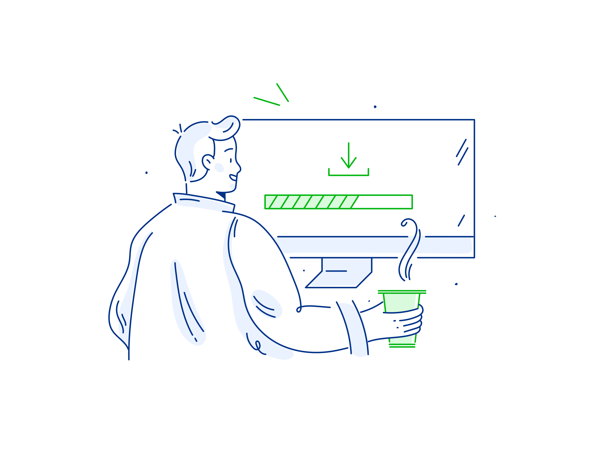
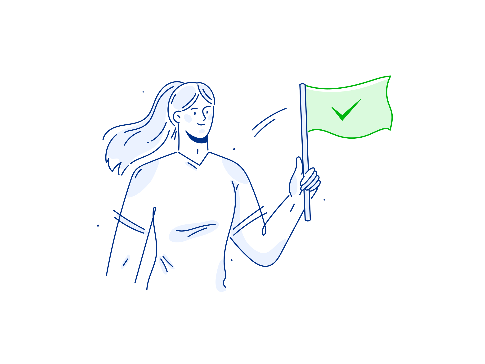

Describe the problem
Be as specific as possible. This will help other community members become aware of what's going on and support you.

Upvote important issues
Browse through every issue submitted by your community and upvote the ones you'd like to see solved first by your government.

Pat yourself on the back
See real change in your community. Get rewards for being a positive community member in the form of points, freebies and local recognition.